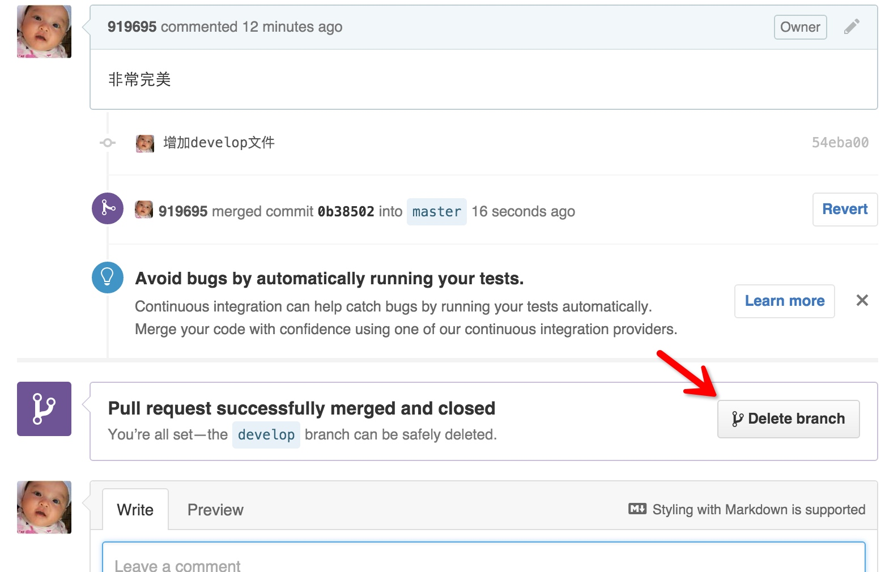

接上篇不用命令玩转GITHUB（一），本篇我们将一起学习GTIHUB重要的工作流学习和操作。
在学习本篇之前可以你可以先阅读 @李鼎 翻译的GTI工作流指南，了解和学习GIT工作流的几种模式和命令操作方法。而本文将只讲解使用GITHUB客户端操作Pull Requests工作流。
Step1.创建分支
在GITHUB客户端为palygit项目新建一个开发分支
图解说明：
- 点击分支按钮
- 输入分支名
- 选择来源分支（我们也有可能是从develop分支下再开一个feature分支）
- 确定创建分支 创建成功后GITHUB客户端会跳转到新建的develop分支视图
图解说明：
- 分支切换选项
- 上面是来源分支，下面是当前分支
- 如果有变更是提交到当前分支不再是master分支
Step2.添加新版本
我们在develop分支下添加一个develop.html文件，然后回到GITHUB客户端提交版本。
提交完成后记得点击Sync按钮进行同步
访问GITHUB的playgit项目主页，可以看到系统提示我们有了新分支，而分支数量也变成了2
进入develop分支也回看到我们刚刚添加的develop.html文件
Step3.发起Pull Request
我们在develop这个分支下进行了大量的开发，并且测试通过后我们就需要把develop分支合并到master，怎么合并呢？就是得先发起Pull Request
图解说明：
- 点击Pull Request按钮
- 对分支进行总结
- 指定请求把develop分支合并到master分支，一般默认即可
- 对分支版本详细描述
- 确定发起
发起拉取请求后我们回到GITHUB的项目主页点击Pull requests链接就可以看到我们发起的Pull Request了。
Step4.讨论和代码审核
我们点击刚刚发起的Pull Request，就可以和团队成员共同查看讨论这个Pull Request
图解说明：
- 总结
- 详细说明
- 变更历史列表，点击可以进入查看变更详情，这里就是做代码审查的
- 这个Pull Request有问题或异议大家可以通过这里进行讨论，如果需要修改版本，只需要在本地进行版本提交和同步，而不需要再发起Pull Request
- 这个Pull Request没有任何问题，就可以确认合并这个Pull Request，只要是团队成员都可以进行合并操作
Step5.合并分支
点击Merge pull request按钮，输入合并总结，合并完成。
合并完成后，我们还可以删除当前分支（如果有必要）。

回到项目主页我们可以看到mater分支下也有develop.html文件了
本篇文章演示我只使用了一个账户，但是只要是团队成员都可以新增分支并发起Pull Request，也可以同时对分支进行版本提交，并且大家可以在GITHUB进行代码审查和自由讨论，最终合并分支。
现在你已经学会使用GITHUB客户端和团队进行协同工作了，并且你指使用0个命令来进行这些操作：）